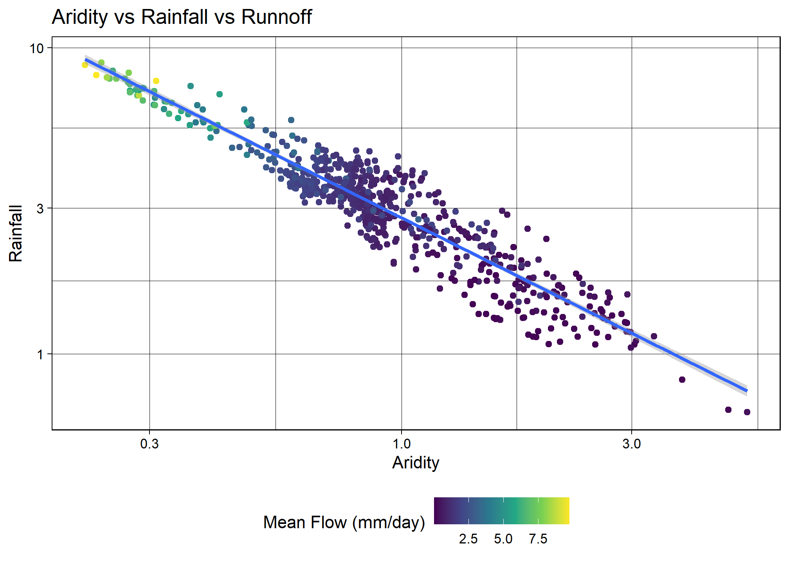

#Data Manipulation
library(tidyverse)
library(tidymodels)
library(dataRetrieval)
library(AOI)
library(powerjoin)
library(glue)
library(vip)
library(baguette)
library(ranger)
library(xgboost)
#Data Visualization
library(ggpubr)
library(gghighlight)
library(ggrepel)
library(ggthemes)
library(flextable)Lab 5: Machine Learning in Hydrology
Tidymodels & CAMELS Data
Libraries
Introduction
In this lab, we will explore predictive modeling in hydrology using the tidymodels framework and the CAMELS (Catchment Attributes and Meteorology for Large-sample Studies) dataset.
What is tidymodels?
tidymodels is an R framework designed for machine learning and statistical modeling. Built on the principles of the tidyverse, tidymodels provides a consistent and modular approach to tasks like data preprocessing, model training, evaluation, and validation. By leveraging the strengths of packages such as recipes, parsnip, and yardstick, tidymodels streamlines the modeling workflow, making it easier to experiment with different models while maintaining reproducibility and interpretability.
What is the CAMELS dataset?
The CAMELS dataset is a widely used resource in hydrology and environmental science, providing data on over 500 self-draining river basins across the United States. It includes meteorological forcings, streamflow observations, and catchment attributes such as land cover, topography, and soil properties. This dataset is particularly valuable for large-sample hydrology studies, enabling researchers to develop and test models across diverse climatic and physiographic conditions.
In this lab, we will focus on predicting mean streamflow for these basins using their associated characteristics. CAMELS has been instrumental in various hydrologic and machine learning applications, including:
Calibrating Hydrologic Models – Used for parameter tuning in models like SAC-SMA, VIC, and HBV, improving regional and large-sample studies.
Training Machine Learning Models – Supports deep learning (e.g., LSTMs) and regression-based streamflow predictions, often outperforming traditional methods.
Understanding Model Behavior – Assists in assessing model generalization, uncertainty analysis, and the role of catchment attributes.
Benchmarking & Regionalization – Facilitates large-scale model comparisons and parameter transfer to ungauged basins.
Hybrid Modeling – Enhances physics-based models with machine learning for bias correction and improved hydrologic simulations.
A notable study by Kratzert et al. (2019) demonstrated that LSTMs can outperform conceptual models in streamflow prediction. As part of this lab, we will explore how to programmatically download and load the data into R.
What’s in the data?
Each record in the CAMELS dataset represents a unique river basin, identified by an outlet USGS NWIS gauge_id. The dataset contains a mix of continuous and categorical variables, including meteorological, catchment, and streamflow summaries.
The data we are going to downloaded are the basin level summaries. For example, if we looked at row 1 of the data (Gage: 01013500) all of the values are the areal average for the drainage basin seen below, while the flow metrics are associated with the outlet gage (in red):
# Use the `findNLDI` function to get the basin and flowlines for the first gauge
basin <- findNLDI(nwis = "01013500",
nav = "UT",
find = c("basin", "flowlines"))
# Plot the basin, flowlines, and gauge ...
ggplot() +
geom_sf(data = basin$basin, fill = "lightblue") +
geom_sf(data = basin$UT_flowlines, color = "blue") +
geom_sf(data = basin$origin, color = "red") +
theme_minimal()
Lab Goals
In this lab, you will:
- Learn how to programmatically download and access data.
- Practice using tidymodels for predictive modeling.
- Train and evaluate models to predict mean stream flow across the country.
- Interpret and compare model performance using workflows.
By the end of this lab, you will have hands-on experience applying machine learning techniques to real-world data, helping to bridge the gap between statistical modeling and environmental science.
Data Download
The CAMELS dataset is hosted by NCAR and can be accessed here under the “Individual Files” section. The root URL for all data seen on the “Individual Files” page is:
root <- 'https://gdex.ucar.edu/dataset/camels/file'Near the bottom of that page, there are many .txt files that contain the data we want. Some hold climate data for each basin, some hold geology data, some hold soil data, etc. There is also a PDF with descriptions of the columns in each file. We are going to download all of the .txt files and the PDF.
Getting the documentation PDF
We can download the documentation PDF which provides a descriptions for the various columns as many are not self-explanatory. Here we can use download.file to download the PDF to our data directory.
download.file('https://gdex.ucar.edu/dataset/camels/file/camels_attributes_v2.0.pdf', 'C:/Users/horre/Desktop/csu_523c/data05/camels_attributes_v2.0.pdf', overwrite = TRUE)
#this function produced a corrupt file, so I downloaded it manually.Getting Basin characteristics
Now we want to download the .txt files that store the actual data documented in the PDF. Doing this file by file (like we did with the PDF) is possible, but lets look at a better/easier way…
- Let’s create a vector storing the data types/file names we want to download:
types <- c("clim", "geol", "soil", "topo", "vege", "hydro")- Using glue, we can construct the needed URLs and file names for the data we want to download:
# Where the files live online ...
remote_files <- glue('{root}/camels_{types}.txt')
# where we want to download the data ...
local_files <- glue('data05/camels_{types}.txt')- Now we can download the data: walk2 comes from the purrr package and is used to apply a function to multiple arguments in parallel (much like map2 works over paired lists). Here, we are asking walk2 to pass the first element of remote_files and the first element of local_files to the download.file function to download the data, and setting quiet = TRUE to suppress output. The process is then iterated for the second element of each vector, and so on.
walk2(remote_files, local_files, download.file, quiet = TRUE)- Once downloaded, the data can be read it into R using readr::read_delim(), again instead of applying this to each file individually, we can use map to apply the function to each element of the local_files list.
# Read and merge data
camels <- map(local_files, read_delim, show_col_types = FALSE)- This gives us a list of data.frames, one for each file that we want to merge into a single table. So far in class we have focused on *_join functions to merge data based on a primary and foreign key relationship.
In this current list, we have >2 tables, but, have a shared column called gauge_id that we can use to merge the data. However, since we have more then a left and right hand table, we need a more robust tool. We will use the powerjoin package to merge the data into a single data frame. powerjoin is a flexible package for joining lists of data.frames. It provides a wide range of join types, including inner, left, right, full, semi, anti, and cross joins making it a versatile tool for data manipulation and analysis, and one that should feel familiar to users of dplyr.
In this case, we are join to merge every data.frame in the list (n = 6) by the shared gauge_id column. Since we want to keep all data, we want a full join.
camels <- power_full_join(camels, by = 'gauge_id')Question 1
Your Turn
- Make sure all data and the PDF are downloaded into your data directory
- From the documentation PDF, report what zero_q_freq represents
zero_q_freq is the frequency or how often there is no flow, q = 0 mm/day
Exploratory Data Analysis
First, lets make a map of the sites. Use the borders() ggplot function to add state boundaries to the map and initially color the points by the mean flow (q_mean) at each site.
ggplot(data = camels, aes(x = gauge_lon, y = gauge_lat)) +
borders("state", colour = "gray50") +
geom_point(aes(color = q_mean)) +
scale_color_gradient(low = "pink", high = "dodgerblue") +
ggthemes::theme_map()Question 2
Your Turn
- Make 2 maps of the sites, coloring the points by the aridity and p_mean column
- Add clear labels, titles, and a color scale that makes sense for each parameter.
- Ensure these render as a single image with your choice of facet_*, patchwork, or ggpubr
aridity <- ggplot(data = camels, aes(x = gauge_lon, y = gauge_lat)) +
borders("state", colour = "gray50") +
geom_point(aes(color = aridity), size = 2) +
scale_color_gradient(low = "#012b90", high = "#d21404") +
ggthemes::theme_map() +
labs(title = 'Aridity for NWIS Gauges',
subtitle = '(PET/P)',
color = 'Aridity Index') +
theme(legend.position = 'right')
p_mean <- ggplot(data = camels, aes(x = gauge_lon, y = gauge_lat)) +
borders("state", colour = "gray50") +
geom_point(aes(color = p_mean), size = 2) +
scale_color_gradient(low = "#DBCA69", high = "#1E4192") +
ggthemes::theme_map() +
labs(title = 'Mean Precipitaion at NWIS Gauges',
subtitle = '(mm/day)',
color = 'Mean Precip.') +
theme(legend.position = 'right')
ggarrange(aridity, p_mean,
ncol = 1, nrow = 2,
common.legend = FALSE)Model Preparation
As an initial analysis, lets look at the relationship between aridity, rainfall and mean flow. First, lets check the correlation between these three variables. Drop NAs and only view the 3 columns of interest.
camels_cor <- camels %>%
select(aridity, p_mean, q_mean) %>%
drop_na() %>%
cor()As expected, there is a strong correlation between rainfall and mean flow, and an inverse correlation between aridity and rainfall. While both are high, we are going see if we can build a model to predict mean flow using aridity and rainfall.
Visual EDA
- Lets start by looking that the 3 dimensions (variables) of this data. We’ll start with a XY plot of aridity and rainfall. We are going to use the scale_color_viridis_c() function to color the points by the q_mean column. This scale functions maps the color of the points to the values in the q_mean column along the viridis continuous (c) palette. Because a scale_color_* function is applied, it maps to the known color aesthetic in the plot.
ggplot(camels, aes(x = aridity, y = p_mean)) +
geom_point(aes(color = q_mean)) +
geom_smooth(method = "lm", color = "red", linetype = 2) +
scale_color_viridis_c() +
theme_linedraw() +
theme(legend.position = "bottom") +
labs(title = "Aridity vs Rainfall vs Runnoff",
x = "Aridity",
y = "Rainfall (mm/day)",
color = "Mean Flow (mm/day)") +
ylim(0, 10)
Ok! so it looks like there is a relationship between rainfall, aridity, and runoff but it looks like an exponential decay function and is certainly not linear.
To test a transformation, we can log transform the x and y axes using the scale_x_log10() and scale_y_log10() functions:
ggplot(camels, aes(x = aridity, y = p_mean)) +
geom_point(aes(color = q_mean)) +
geom_smooth(method = "lm") +
scale_color_viridis_c() +
scale_x_log10() +
scale_y_log10() +
theme_linedraw() +
theme(legend.position = "bottom") +
labs(title = "Aridity vs Rainfall vs Runnoff",
x = "Aridity",
y = "Rainfall",
color = "Mean Flow (mm/day)")
Great! We can see a log-log relationship between aridity and rainfall provides a more linear relationship. This is a common relationship in hydrology and is often used to estimate rainfall in ungauged basins. However, once the data is transformed, the lack of spread in the streamflow data is quite evident with high mean flow values being compressed to the low end of aridity/high end of rainfall.
To address this, we can visualize how a log transform may benifit the q_mean data as well. Since the data is represented by color, rather then an axis, we can use the trans (transform) argument in the scale_color_viridis_c() function to log transform the color scale.
ggplot(camels, aes(x = aridity, y = p_mean)) +
geom_point(aes(color = q_mean)) +
geom_smooth(method = "lm") +
# Apply a log transformation to the color scale
scale_color_viridis_c(trans = "log") +
scale_x_log10() +
scale_y_log10() +
theme_linedraw() +
theme(legend.position = "bottom",
# Expand the legend width ...
legend.key.width = unit(2.5, "cm"),
legend.key.height = unit(.5, "cm")) +
labs(title = "Aridity vs Rainfall vs Runnoff",
x = "Aridity",
y = "Rainfall",
color = "Mean Flow") 
Excellent! Treating these three right skewed variables as log transformed, we can see a more evenly spread relationship between aridity, rainfall, and mean flow. This is a good sign for building a model to predict mean flow using aridity and rainfall. ****
Model Building
Lets start by splitting the data
First, we set a seed for reproduceabilty, then transform the q_mean column to a log scale. Remember it is error prone to apply transformations to the outcome variable within a recipe, so, we’ll do it a priori.
Once set, we can split the data into a training and testing set. We are going to use 80% of the data for training and 20% for testing with no stratification.
Additionally, we are going to create a 10-fold cross validation dataset to help us evaluate multi-model setups.
set.seed(9257)
# Bad form to perform simple transformations on the outcome variable within a
# recipe. So, we'll do it here.
camels_mod <- camels %>%
mutate(logQmean = log(q_mean))
# Generate the split
camels_split <- initial_split(camels_mod, prop = 0.8)
camels_train <- training(camels_split)
camels_test <- testing(camels_split)
camels_cv <- vfold_cv(camels_train, v = 10) #cv = cross-validation, v = # foldsPreprocessor: recipe
In lecture, we have focused on using formulas as a workflow pre-processor. Separately we have used the recipe function to define a series of data pre-processing steps. Here, we are going to use the recipe function to define a series of data pre-processing steps.
We learned quite a lot about the data in the visual EDA. We know that the q_mean, aridity and p_mean columns are right skewed and can be helped by log transformations. We also know that the relationship between aridity and p_mean is non-linear and can be helped by adding an interaction term to the model. To implement these, lets build a recipe!
# Create a recipe to preprocess the data
rec <- recipe(logQmean ~ aridity + p_mean, data = camels_train) %>%
# Log transform the predictor variables (aridity and p_mean)
step_log(all_predictors()) %>%
# Add an interaction term between aridity and p_mean
step_interact(terms = ~ aridity:p_mean) %>%
# Drop any rows with missing values in the pred
step_naomit(all_predictors(), all_outcomes())Naive base lm approach:
Ok, to start, lets do what we are comfortable with … fitting a linear model to the data. First, we use prep and bake on the training data to apply the recipe. Then, we fit a linear model to the data.
# Prepare the data
baked_data <- prep(rec, camels_train) %>%
bake(new_data = NULL)
# Interaction with lm
# Base lm sets interaction terms with the * symbol
lm_base <- lm(logQmean ~ aridity * p_mean, data = baked_data)
summary(lm_base)
Call:
lm(formula = logQmean ~ aridity * p_mean, data = baked_data)
Residuals:
Min 1Q Median 3Q Max
-2.80103 -0.21464 -0.02143 0.21232 2.54675
Coefficients:
Estimate Std. Error t value Pr(>|t|)
(Intercept) -1.59480 0.16214 -9.836 < 2e-16 ***
aridity -0.86401 0.15696 -5.505 5.76e-08 ***
p_mean 1.33565 0.15375 8.687 < 2e-16 ***
aridity:p_mean 0.06208 0.06945 0.894 0.372
---
Signif. codes: 0 '***' 0.001 '**' 0.01 '*' 0.05 '.' 0.1 ' ' 1
Residual standard error: 0.5612 on 531 degrees of freedom
Multiple R-squared: 0.7622, Adjusted R-squared: 0.7609
F-statistic: 567.4 on 3 and 531 DF, p-value: < 2.2e-16# Sanity Interaction term from recipe ... these should be equal!!
summary(lm(logQmean ~ aridity + p_mean + aridity_x_p_mean, data = baked_data))
Call:
lm(formula = logQmean ~ aridity + p_mean + aridity_x_p_mean,
data = baked_data)
Residuals:
Min 1Q Median 3Q Max
-2.80103 -0.21464 -0.02143 0.21232 2.54675
Coefficients:
Estimate Std. Error t value Pr(>|t|)
(Intercept) -1.59480 0.16214 -9.836 < 2e-16 ***
aridity -0.86401 0.15696 -5.505 5.76e-08 ***
p_mean 1.33565 0.15375 8.687 < 2e-16 ***
aridity_x_p_mean 0.06208 0.06945 0.894 0.372
---
Signif. codes: 0 '***' 0.001 '**' 0.01 '*' 0.05 '.' 0.1 ' ' 1
Residual standard error: 0.5612 on 531 degrees of freedom
Multiple R-squared: 0.7622, Adjusted R-squared: 0.7609
F-statistic: 567.4 on 3 and 531 DF, p-value: < 2.2e-16# They are EQUAL.Where things get a little messy…
Ok so now we have our trained model lm_base and want to validate it on the test data.
Remember a model's ability to predict on new data is the most important part of the modeling process. It really doesnt matter how well it does on data it has already seen!We have to be careful about how we do this with the base R approach: INCORRECT PREDICTIONS
nrow(camels_test)
nrow(camels_train)
broom::augment(lm_base, data = camels_test)
camels_test$p2 = predict(lm_base, newdata = camels_test)
#View Data
ggplot(camels_test, aes(x = p2, y = logQmean)) +
geom_point() +
geom_smooth(method = "lm", se = TRUE, size =1) +
geom_abline(color = "red", size = 1) +
labs(title = "Linear Model Using `predict()`",
x = "Predicted Log Mean Flow",
y = "Observed Log Mean Flow") +
theme_linedraw()Correct version: prep -> bake -> predict
To correctly evaluate the model on the test data, we need to apply the same pre-processing steps to the test data that we applied to the training data. We can do this using the prep and bake functions with the recipe object. This ensures the test data is transformed in the same way as the training data before making predictions.
test_data <- bake(prep(rec), new_data = camels_test)
test_data$lm_pred <- predict(lm_base, newdata = test_data)Model Evaluation: statistical and visual
Now that we have the predicted values, we can evaluate the model using the metrics function from the yardstick package. This function calculates common regression metrics such as RMSE, R-squared, and MAE between the observed and predicted values.
metrics(test_data, truth = logQmean, estimate = lm_pred)# A tibble: 3 × 3
.metric .estimator .estimate
<chr> <chr> <dbl>
1 rmse standard 0.625
2 rsq standard 0.797
3 mae standard 0.383mod1 <- ggplot(test_data, aes(x = logQmean, y = lm_pred, colour = aridity)) +
# Apply a gradient color scale
scale_color_gradient2(low = "brown", mid = "orange", high = "darkgreen") +
geom_point() +
geom_abline(linetype = 2) +
theme_linedraw() +
labs(title = "Linear Model: Base Model",
x = "Observed Log Mean Flow",
y = "Predicted Log Mean Flow",
color = "Aridity")So that was a bit burdensome, is really error prone (fragile), and is worthless if we wanted to test a different algorithm… lets look at a better approach!
Using a workflow instead
tidymodels provides a framework for building and evaluating models using a consistent and modular workflow. The workflows package allows you to define a series of modeling steps, including data pre-processing, model fitting in a single object. This makes it easier to experiment with different models, compare performance, and ensure reproducibility.
workflows are built from a model, a pre-processor, and an execution. Here, we are going to use the linear_reg function to define a linear regression model, set the engine to lm, and the mode to regression. We then add our recipe to the workflow, fit the model to the training data, and extract the model coefficients.
# Define model
lm_model <- linear_reg() %>%
# define the engine
set_engine("lm") %>%
# define the mode
set_mode("regression")
# Instantiate a workflow ...
lm_wf <- workflow() %>%
# Add the recipe
add_recipe(rec) %>%
# Add the model
add_model(lm_model) %>%
# Fit the model to the training data
fit(data = camels_train)
# Extract the model coefficients from the workflow
summary(extract_fit_engine(lm_wf))$coefficients Estimate Std. Error t value Pr(>|t|)
(Intercept) -1.5948018 0.1621433 -9.8357545 4.391230e-21
aridity -0.8640099 0.1569591 -5.5046826 5.764840e-08
p_mean 1.3356457 0.1537493 8.6871645 4.607667e-17
aridity_x_p_mean 0.0620750 0.0694540 0.8937571 3.718568e-01Lets ensure we replicated the results from the lm_base model. How do they look to you? They are the same, so the models are the same.
# From the base implementation
summary(lm_base)$coefficients Estimate Std. Error t value Pr(>|t|)
(Intercept) -1.5948018 0.1621433 -9.8357545 4.391230e-21
aridity -0.8640099 0.1569591 -5.5046826 5.764840e-08
p_mean 1.3356457 0.1537493 8.6871645 4.607667e-17
aridity:p_mean 0.0620750 0.0694540 0.8937571 3.718568e-01Making Predictions
Now that lm_wf is a workflow, data is not embedded in the model, we can use augment with the new_data argument to make predictions on the test data.
#
lm_data <- augment(lm_wf, new_data = camels_test)
dim(lm_data)[1] 135 61Model Evaluation: statistical vs. visual
As with EDA, applying for graphical and statistical evaluation of the model is a key Here, we use the metrics function to extract the default metrics (rmse, rsq, mae) between the observed and predicted mean stream flow values.
We then create a scatter plot of the observed vs predicted values, colored by aridity, to visualize the model performance.
metrics(lm_data, truth = logQmean, estimate = .pred)# A tibble: 3 × 3
.metric .estimator .estimate
<chr> <chr> <dbl>
1 rmse standard 0.625
2 rsq standard 0.797
3 mae standard 0.383mod2 <- ggplot(lm_data, aes(x = logQmean, y = .pred, colour = aridity)) +
scale_color_viridis_c() +
geom_point() +
geom_abline() +
theme_linedraw() +
labs(title = "Linear Model: Workflow",
x = "Observed Log Mean Flow",
y = "Predicted Log Mean Flow",
color = "Aridity")
ggarrange(mod1, mod2,
ncol = 2,
nrow = 1,
common.legend = FALSE)There are differences in the two plots because the Aridity scale is different. Why is it different in workflows vs. the base lm model approach?
Switch it up!
The real power of this approach is that we can easily switch out the models/recipes and see how it performs. Here, we are going to instead use a random forest model to predict mean stream flow. We define a random forest model using the rand_forest function, set the engine to ranger, and the mode to regression. We then add the recipe, fit the model, and evaluate the skill.
rf_model <- rand_forest() %>%
set_engine("ranger", importance = "impurity") %>%
set_mode("regression")
rf_wf <- workflow() %>%
# Add the recipe
add_recipe(rec) %>%
# Add the model
add_model(rf_model) %>%
# Fit the model
fit(data = camels_train) Predictions
- Make predictions on the test data using the augment function and the new_data argument.
rf_data <- augment(rf_wf, new_data = camels_test)
dim(rf_data)[1] 135 60Model Evaluation: statistical and visual
Evaluate the model using the metrics function and create a scatter plot of the observed vs predicted values, colored by aridity.
metrics(rf_data, truth = logQmean, estimate = .pred)# A tibble: 3 × 3
.metric .estimator .estimate
<chr> <chr> <dbl>
1 rmse standard 0.593
2 rsq standard 0.797
3 mae standard 0.344mod3 <- ggplot(rf_data, aes(x = logQmean, y = .pred, colour = aridity)) +
scale_color_viridis_c() +
geom_point() +
geom_abline() +
theme_linedraw() +
labs(title = "Random Forest Model: Workflow",
x = "Observed Log Mean Flow",
y = "Predicted Log Mean Flow",
color = "Aridity")
ggarrange(mod1, mod2, mod3,
ncol = 3,
nrow = 1,
common.legend = FALSE)
Awesome! We just set up a completely new model and were able to utilize all of the things we had done for the linear model. This is the power of the tidymodels framework!
That said, we still can reduce some to the repetition. Further, we are not really able to compare these models to one another.
A workflowset approach
workflow_set is a powerful tool for comparing multiple models on the same data. It allows you to define a set of workflows, fit them to the same data, and evaluate their performance using a common metric. Here, we are going to create a workflow_set object with the linear regression and random forest models, fit them to the training data, and compare their performance using the autoplot and rank_results functions.
wf <- workflow_set(list(rec), list(lm_model, rf_model)) %>%
workflow_map('fit_resamples', resamples = camels_cv)
autoplot(wf)
rank_results(wf, rank_metric = "rsq", select_best = TRUE)# A tibble: 4 × 9
wflow_id .config .metric mean std_err n preprocessor model rank
<chr> <chr> <chr> <dbl> <dbl> <int> <chr> <chr> <int>
1 recipe_rand_fore… Prepro… rmse 0.554 0.0322 10 recipe rand… 1
2 recipe_rand_fore… Prepro… rsq 0.776 0.0137 10 recipe rand… 1
3 recipe_linear_reg Prepro… rmse 0.557 0.0327 10 recipe line… 2
4 recipe_linear_reg Prepro… rsq 0.770 0.0167 10 recipe line… 2Overall it seems the random forest model is outperforming the linear model. This is not surprising given the non-linear relationship between the predictors and the outcome :)
Final Model
rf_fin <- rand_forest() %>%
set_engine("ranger", importance = "impurity") %>%
set_mode("regression")
final <- workflow() %>%
add_recipe(rec) %>%
add_model(rf_fin) %>%
fit(data = camels_train)Evaluation
As a last step, lets evaluate the Random Forest model’s performance in predicting stream flow using the vip, augment, and ggplot2. We’ll start by computing variable importance (vip::vip()) to understand which predictors most influence the model.
Next, we’ll apply the trained model (final) to the test data set using augment to append predictions to the test data.
Model performance is then assessed using metrics(), comparing the actual (logQmean) and predicted (.pred) log-transformed mean stream flow values.
Finally, a scatter plot is generated, visualizing the observed vs. predicted values, color-coded by aridity. The plot includes a 1:1 reference line (geom_abline()) to indicate perfect predictions and uses the viridis color scale to improve readability.
# VIP
vip::vip(final)
p_mean is the most important variable in predicting mean streamflow. This makes sense because streams are driven by precipitation (and groundwater).
## Prediction
rf_data <- augment(final, new_data = camels_test)
## Evaluation
metrics(rf_data, truth = logQmean, estimate = .pred)# A tibble: 3 × 3
.metric .estimator .estimate
<chr> <chr> <dbl>
1 rmse standard 0.593
2 rsq standard 0.797
3 mae standard 0.344ggplot(rf_data, aes(x = logQmean, y = .pred, colour = aridity)) +
scale_color_viridis_c() +
geom_point() +
geom_abline() +
geom_smooth(method = "lm", col = 'red', lty = 2, se = FALSE) +
theme_linedraw() +
labs(title = "Random Forest Model: Observed vs Predicted",
x = "Observed Log Mean Flow",
y = "Predicted Log Mean Flow",
color = "Aridity")
Question 3: Your Turn
- Build a xgboost (engine) regression (mode) model using boost_tree
- Build a neural network model using the nnet engine from the baguette package using the bag_mlp function
- Add this to the above workflow
- Evaluate the model and compare it to the linear and random forest models
- Which of the 4 models would you move forward with?
boost_model <- boost_tree() %>%
set_engine("xgboost") %>%
set_mode("regression")
boost_wf <- workflow() %>%
add_recipe(rec) %>%
add_model(boost_model) %>%
fit(data = camels_train)
boost_data <- augment(boost_wf, new_data = camels_test)
dim(boost_data)[1] 135 60metrics(boost_data, truth = logQmean, estimate = .pred)# A tibble: 3 × 3
.metric .estimator .estimate
<chr> <chr> <dbl>
1 rmse standard 0.615
2 rsq standard 0.774
3 mae standard 0.355neural_model <- bag_mlp() %>%
set_engine("nnet") %>%
set_mode("regression")
neural_wf <- workflow() %>%
add_recipe(rec) %>%
add_model(neural_model) %>%
fit(data = camels_train)
neural_data <- augment(neural_wf, new_data = camels_test)
dim(neural_data)[1] 135 61metrics(neural_data, truth = logQmean, estimate = .pred)# A tibble: 3 × 3
.metric .estimator .estimate
<chr> <chr> <dbl>
1 rmse standard 0.575
2 rsq standard 0.814
3 mae standard 0.328Comparing Models
full_wf <- workflow_set(list(rec), list(lm_model, rf_model, boost_model, neural_model)) %>%
workflow_map('fit_resamples', resamples = camels_cv)
autoplot(full_wf)rank_results(full_wf, rank_metric = 'rsq', select_best = TRUE)# A tibble: 8 × 9
wflow_id .config .metric mean std_err n preprocessor model rank
<chr> <chr> <chr> <dbl> <dbl> <int> <chr> <chr> <int>
1 recipe_bag_mlp Prepro… rmse 0.545 0.0386 10 recipe bag_… 1
2 recipe_bag_mlp Prepro… rsq 0.783 0.0208 10 recipe bag_… 1
3 recipe_rand_fore… Prepro… rmse 0.554 0.0329 10 recipe rand… 2
4 recipe_rand_fore… Prepro… rsq 0.776 0.0143 10 recipe rand… 2
5 recipe_linear_reg Prepro… rmse 0.557 0.0327 10 recipe line… 3
6 recipe_linear_reg Prepro… rsq 0.770 0.0167 10 recipe line… 3
7 recipe_boost_tree Prepro… rmse 0.576 0.0377 10 recipe boos… 4
8 recipe_boost_tree Prepro… rsq 0.761 0.0169 10 recipe boos… 4Which Model to choose? Based on the models, the random forest and neural network models perform the best with random forest barely outperforming neural networks with slightly less error in the rmse and rsq. The boosted model performed the worst but all models are very close.
mod4 <- ggplot(boost_data, aes(x = logQmean, y = .pred, colour = aridity)) +
scale_color_viridis_c() +
geom_point() +
geom_abline() +
theme_linedraw() +
labs(title = "XG Boost Model: Workflow",
x = "Observed Log Mean Flow",
y = "Predicted Log Mean Flow",
color = "Aridity")
mod5 <- ggplot(neural_data, aes(x = logQmean, y = .pred, colour = aridity)) +
scale_color_viridis_c() +
geom_point() +
geom_abline() +
theme_linedraw() +
labs(title = "Neural Network Model: Workflow",
x = "Observed Log Mean Flow",
y = "Predicted Log Mean Flow",
color = "Aridity")
ggarrange(mod2, mod3, mod4, mod5,
ncol = 2,
nrow = 2,
common.legend = FALSE)
Question 4: Build Your Own
Borrowing from the workflow presented above, build your own complete ML pipeline to predict mean stream flow using the CAMELS dataset. You can experiment with different predictors and pre-processing steps to see how they impact model performance. A successful model will have a R-squared value > 0.9. To get started, you can use the following steps as a template:
- Data Splitting (15) - Set a seed for reproducibility. Create an initial split with 75% used for training and 25% for testing Extract your training and testing sets Build a 10-fold CV dataset as well.
set.seed(8)
camels_split2 <- initial_split(camels_mod, prop = 0.75)
camels_train2 <- training(camels_split2)
camels_test2 <- testing(camels_split2)
camels_cv2 <- vfold_cv(camels_train2, v = 10)- Recipe (15) - Define a formula you want to use to predict logQmean. Describe in words why you are choosing this specific formula. Consult the downloaded PDF for the data to help you make this decision. Build a recipe that you feel handles the predictors chosen.
#Check some variable relationships:
ggplot(camels, aes(x = p_mean, y = baseflow_index)) +
geom_point(aes(color = q_mean)) +
geom_smooth(method = "lm") +
scale_color_viridis_c() +
theme_linedraw()
camels_cor2 <- camels %>%
select(where(is.numeric)) %>%
drop_na() %>%
cor()
camels_cor2 p_mean pet_mean p_seasonality frac_snow
p_mean 1.000000000 -0.261771661 -0.350614969 -0.157442522
pet_mean -0.261771661 1.000000000 -0.064002384 -0.116213266
p_seasonality -0.350614969 -0.064002384 1.000000000 -0.279450442
frac_snow -0.157442522 -0.116213266 -0.279450442 1.000000000
aridity -0.757737324 0.507134147 0.043314381 0.110351197
high_prec_freq -0.600115980 0.431261115 0.316723131 -0.301776682
high_prec_dur -0.136151415 0.237290729 -0.571554873 0.211323955
low_prec_freq -0.725977980 0.529599149 0.179739034 -0.193514185
low_prec_dur -0.421727768 0.383015271 -0.373080945 -0.037849936
glim_1st_class_frac 0.132877456 0.025698562 0.110399171 -0.236472060
glim_2nd_class_frac -0.101093138 -0.021328546 -0.079226318 0.159452076
carbonate_rocks_frac -0.134536055 0.024073003 0.205509579 -0.072144972
geol_porostiy -0.033236423 0.149604656 0.133215574 -0.231145069
geol_permeability 0.019933555 0.227416747 0.017974915 -0.003987861
soil_depth_pelletier -0.127218455 0.045457101 0.441594090 -0.280746897
soil_depth_statsgo 0.088277481 -0.084299137 0.423661697 -0.051407995
soil_porosity -0.036683466 -0.178534457 0.167897714 -0.168498560
soil_conductivity 0.081935910 0.165343758 0.020184576 0.081455197
max_water_content 0.053352862 -0.060301883 0.438932968 -0.179315094
sand_frac 0.093194920 0.151412944 -0.039638893 0.133075776
silt_frac 0.124985760 -0.405336369 0.081078690 -0.059914433
clay_frac -0.145577384 0.193164222 0.150189961 -0.357160258
water_frac -0.002725016 -0.002271627 0.091422847 0.007644398
organic_frac -0.007049833 0.045365617 0.099466165 -0.030323112
other_frac -0.120482920 0.058180117 -0.221613140 0.246880107
gauge_lat 0.133775281 -0.758063715 -0.128589846 0.482847721
gauge_lon -0.034191721 -0.112644575 0.636321701 -0.374254900
elev_mean -0.296772978 0.150548109 -0.272974882 0.838921775
slope_mean 0.235098855 -0.081716317 -0.652786990 0.630633490
area_gages2 -0.189524222 -0.064273726 0.216478735 -0.042042331
area_geospa_fabric -0.196822559 -0.060450505 0.214311349 -0.040773042
frac_forest 0.590866350 -0.251811264 -0.354355697 0.126905386
lai_max 0.609176960 -0.334523674 -0.052051345 -0.282692953
lai_diff 0.449550746 -0.409990256 0.127683173 -0.245102552
gvf_max 0.648173444 -0.433112673 -0.005765998 -0.278626151
gvf_diff -0.001757872 -0.533317103 0.507812406 -0.134475136
dom_land_cover_frac 0.121198133 -0.237564178 -0.011347828 0.036547660
root_depth_50 0.372262931 -0.203721284 0.010401825 -0.366480911
root_depth_99 0.242246604 0.051284239 -0.273423972 -0.213926932
q_mean 0.886892995 -0.393566728 -0.472592742 0.110362311
runoff_ratio 0.717506771 -0.399859933 -0.510625473 0.350011144
slope_fdc 0.591533782 -0.416557243 -0.155787378 -0.039055143
baseflow_index 0.152544839 -0.159737526 -0.211030408 0.383337567
stream_elas -0.307846672 0.290334602 0.260032001 -0.313907773
q5 0.596424193 -0.272623701 -0.319532173 0.218607653
q95 0.844951743 -0.360003281 -0.508961802 0.163683894
high_q_freq -0.369816730 0.277182560 -0.073962400 -0.091566185
high_q_dur -0.397843235 0.230351143 -0.148008771 0.217263048
low_q_freq -0.257176195 0.193835359 0.051848895 -0.243114271
low_q_dur -0.225185284 0.171119387 -0.147898426 -0.081615954
zero_q_freq -0.290730536 0.196332374 -0.093290615 -0.176823709
hfd_mean -0.545239963 0.158067370 0.386290927 0.541334561
aridity high_prec_freq high_prec_dur low_prec_freq
p_mean -0.75773732 -0.60011598 -0.136151415 -0.72597798
pet_mean 0.50713415 0.43126111 0.237290729 0.52959915
p_seasonality 0.04331438 0.31672313 -0.571554873 0.17973903
frac_snow 0.11035120 -0.30177668 0.211323955 -0.19351419
aridity 1.00000000 0.50712961 0.448099261 0.74572886
high_prec_freq 0.50712961 1.00000000 0.173578655 0.86542341
high_prec_dur 0.44809926 0.17357866 1.000000000 0.36705729
low_prec_freq 0.74572886 0.86542341 0.367057287 1.00000000
low_prec_dur 0.73406290 0.36775957 0.724949103 0.68907247
glim_1st_class_frac -0.18776236 0.05294191 -0.162481373 -0.01438804
glim_2nd_class_frac 0.12829837 -0.02353365 0.116148354 0.02464826
carbonate_rocks_frac 0.01445524 0.16179233 -0.116436296 0.13354662
geol_porostiy 0.05731427 0.15466351 -0.005138128 0.11305862
geol_permeability 0.11774158 0.09592419 0.137699724 0.16385973
soil_depth_pelletier -0.01654422 0.22783914 -0.170660060 0.16666340
soil_depth_statsgo -0.23281411 -0.03227669 -0.327986269 -0.13407073
soil_porosity -0.10451483 0.03865957 -0.203187735 -0.04026966
soil_conductivity -0.02319839 -0.10583980 0.059219736 -0.06834435
max_water_content -0.29193975 0.06934897 -0.400083074 -0.10332198
sand_frac -0.07451626 -0.08808708 0.044544745 -0.09719894
silt_frac -0.32197360 -0.12681054 -0.309152871 -0.27902469
clay_frac 0.08631186 0.39125073 -0.065522807 0.30938290
water_frac -0.01930124 -0.03573997 -0.020871130 -0.03280529
organic_frac -0.02618532 -0.03265000 -0.053360652 -0.03735503
other_frac 0.32394266 -0.06634809 0.352416501 0.17283302
gauge_lat -0.24537242 -0.51543394 0.038997591 -0.50663007
gauge_lon -0.31744834 0.11456529 -0.801600535 -0.12216919
elev_mean 0.41248825 -0.13979808 0.369493476 0.04832004
slope_mean 0.03503990 -0.47549600 0.462034214 -0.28746016
area_gages2 0.13920651 0.05577285 0.008056096 0.10286236
area_geospa_fabric 0.15373691 0.06092346 0.013371596 0.10969832
frac_forest -0.57702559 -0.55471712 -0.178606475 -0.66077590
lai_max -0.70955021 -0.37522235 -0.488089301 -0.60713954
lai_diff -0.65348799 -0.31738855 -0.631713067 -0.56305455
gvf_max -0.82384225 -0.41447437 -0.495961360 -0.66961112
gvf_diff -0.41017804 -0.07861925 -0.677981775 -0.29360239
dom_land_cover_frac -0.15553085 -0.11389128 -0.100031890 -0.15264011
root_depth_50 -0.44551203 -0.16466284 -0.350039093 -0.33360064
root_depth_99 -0.06240034 -0.16426989 -0.025980591 -0.14588696
q_mean -0.58538097 -0.67492327 0.071181205 -0.71723716
runoff_ratio -0.58291614 -0.69140894 0.009894504 -0.73791288
slope_fdc -0.64316386 -0.46678767 -0.287531670 -0.64016916
baseflow_index -0.16171152 -0.30968648 -0.005888386 -0.33185073
stream_elas 0.26238742 0.46128086 0.069106388 0.45671687
q5 -0.38846732 -0.54109413 0.035797255 -0.55139675
q95 -0.56771441 -0.66300856 0.106653763 -0.69117432
high_q_freq 0.45238125 0.34103438 0.359487938 0.50765835
high_q_dur 0.50265570 0.17093050 0.396012925 0.39424049
low_q_freq 0.30934679 0.32161848 0.254103938 0.43780936
low_q_dur 0.35164542 0.18809330 0.434043627 0.39326813
zero_q_freq 0.43473640 0.25050268 0.299477673 0.41039926
hfd_mean 0.38255575 0.16459999 0.036617329 0.29498380
low_prec_dur glim_1st_class_frac glim_2nd_class_frac
p_mean -0.421727768 0.132877456 -0.101093138
pet_mean 0.383015271 0.025698562 -0.021328546
p_seasonality -0.373080945 0.110399171 -0.079226318
frac_snow -0.037849936 -0.236472060 0.159452076
aridity 0.734062903 -0.187762358 0.128298375
high_prec_freq 0.367759568 0.052941909 -0.023533655
high_prec_dur 0.724949103 -0.162481373 0.116148354
low_prec_freq 0.689072467 -0.014388041 0.024648265
low_prec_dur 1.000000000 -0.143166974 0.107602955
glim_1st_class_frac -0.143166974 1.000000000 -0.895549156
glim_2nd_class_frac 0.107602955 -0.895549156 1.000000000
carbonate_rocks_frac -0.040770062 -0.051077906 0.086703703
geol_porostiy 0.006717683 0.219288471 -0.196203928
geol_permeability 0.126840078 -0.063054517 0.055041907
soil_depth_pelletier -0.090048992 0.177860374 -0.140335351
soil_depth_statsgo -0.396298086 0.068818431 -0.040664599
soil_porosity -0.165938849 -0.001121587 0.035958118
soil_conductivity 0.029760263 0.058246300 -0.044349583
max_water_content -0.408834147 0.071629588 -0.020385371
sand_frac -0.035333197 0.056726167 -0.058069191
silt_frac -0.337666360 0.025992614 -0.001113519
clay_frac 0.035796783 -0.055316464 0.075836414
water_frac -0.031882250 -0.009293535 -0.025123458
organic_frac -0.051059536 0.020841792 0.002702992
other_frac 0.390808400 -0.082533025 0.048718843
gauge_lat -0.265821301 -0.173092765 0.133793405
gauge_lon -0.532861324 0.264999508 -0.203334163
elev_mean 0.221636660 -0.304489149 0.184157123
slope_mean 0.225048437 -0.252493590 0.160815877
area_gages2 0.022869803 -0.094068331 0.122505933
area_geospa_fabric 0.031084133 -0.097143229 0.122983188
frac_forest -0.392457418 0.057079553 -0.069691903
lai_max -0.565642257 0.207347365 -0.163988970
lai_diff -0.622352724 0.200566797 -0.150284415
gvf_max -0.648851109 0.196161288 -0.143743646
gvf_diff -0.576295376 0.133740827 -0.084660900
dom_land_cover_frac -0.125153729 0.149484557 -0.113388302
root_depth_50 -0.306040820 0.146108552 -0.105065568
root_depth_99 0.107084768 0.024720623 -0.035087393
q_mean -0.268798304 -0.005035284 -0.009440020
runoff_ratio -0.321088899 -0.047779755 0.012540232
slope_fdc -0.474617340 0.107752541 -0.105786594
baseflow_index -0.181737921 -0.125818582 0.090794251
stream_elas 0.204864853 0.042065925 -0.017288278
q5 -0.230326881 -0.082463084 0.070273201
q95 -0.244318931 -0.011930872 -0.002211466
high_q_freq 0.517818369 0.006334177 0.010263864
high_q_dur 0.498658887 -0.091080349 0.082947287
low_q_freq 0.393634403 0.084180955 -0.063907632
low_q_dur 0.526414528 0.026973538 -0.012553404
zero_q_freq 0.504042519 -0.018872444 0.050760910
hfd_mean 0.067440225 -0.215533014 0.171591229
carbonate_rocks_frac geol_porostiy geol_permeability
p_mean -0.134536055 -0.033236423 0.019933555
pet_mean 0.024073003 0.149604656 0.227416747
p_seasonality 0.205509579 0.133215574 0.017974915
frac_snow -0.072144972 -0.231145069 -0.003987861
aridity 0.014455236 0.057314273 0.117741579
high_prec_freq 0.161792330 0.154663509 0.095924194
high_prec_dur -0.116436296 -0.005138128 0.137699724
low_prec_freq 0.133546624 0.113058620 0.163859735
low_prec_dur -0.040770062 0.006717683 0.126840078
glim_1st_class_frac -0.051077906 0.219288471 -0.063054517
glim_2nd_class_frac 0.086703703 -0.196203928 0.055041907
carbonate_rocks_frac 1.000000000 -0.227772597 0.474124712
geol_porostiy -0.227772597 1.000000000 -0.005845410
geol_permeability 0.474124712 -0.005845410 1.000000000
soil_depth_pelletier 0.097030900 0.296363966 0.169023934
soil_depth_statsgo -0.028993380 0.036082904 0.140344077
soil_porosity 0.306339393 -0.036543040 -0.095350802
soil_conductivity -0.148910143 0.106858734 0.134540416
max_water_content 0.077443549 0.076402733 0.074921006
sand_frac -0.303962002 0.132568073 0.105867676
silt_frac 0.132039473 -0.013417219 -0.247296481
clay_frac 0.237525355 0.013140335 -0.010074719
water_frac -0.058097046 0.040373660 0.031608036
organic_frac 0.061232166 0.048454007 0.074101947
other_frac 0.015011819 -0.143557651 0.088881383
gauge_lat -0.093641959 -0.197717178 -0.192447720
gauge_lon 0.083312458 0.016084264 -0.161658446
elev_mean -0.081895090 -0.209936751 0.046312214
slope_mean -0.198840843 -0.297232921 -0.038111615
area_gages2 0.007389907 0.096166716 0.014059593
area_geospa_fabric 0.005722204 0.097681652 0.015761781
frac_forest -0.240878454 -0.173648079 -0.131847598
lai_max -0.156442812 -0.040804908 -0.173553903
lai_diff -0.089293073 -0.092380906 -0.242170004
gvf_max -0.074388774 -0.064031420 -0.191067119
gvf_diff 0.144017853 -0.104434616 -0.306867839
dom_land_cover_frac -0.041650330 0.055210298 -0.162898982
root_depth_50 -0.099643702 -0.119240242 -0.075627854
root_depth_99 -0.228334526 -0.079176717 -0.005250676
q_mean -0.170898073 -0.128335882 -0.010127074
runoff_ratio -0.154808396 -0.225742581 -0.086167070
slope_fdc -0.112799029 -0.068653936 -0.150017342
baseflow_index -0.042838888 -0.256974679 0.066950533
stream_elas 0.086482089 0.134336957 0.036256303
q5 -0.103017790 -0.227602559 0.089841575
q95 -0.165228361 -0.090913431 -0.028244461
high_q_freq 0.002867054 0.121579037 -0.008613003
high_q_dur -0.007891415 -0.002348939 0.076801995
low_q_freq 0.020679408 0.222516538 -0.032938015
low_q_dur 0.019107141 0.058560447 0.057715307
zero_q_freq -0.014873846 0.055870131 -0.005515677
hfd_mean 0.115078681 -0.080713454 0.132551397
soil_depth_pelletier soil_depth_statsgo soil_porosity
p_mean -0.12721845 0.088277481 -0.036683466
pet_mean 0.04545710 -0.084299137 -0.178534457
p_seasonality 0.44159409 0.423661697 0.167897714
frac_snow -0.28074690 -0.051407995 -0.168498560
aridity -0.01654422 -0.232814114 -0.104514827
high_prec_freq 0.22783914 -0.032276685 0.038659574
high_prec_dur -0.17066006 -0.327986269 -0.203187735
low_prec_freq 0.16666340 -0.134070734 -0.040269658
low_prec_dur -0.09004899 -0.396298086 -0.165938849
glim_1st_class_frac 0.17786037 0.068818431 -0.001121587
glim_2nd_class_frac -0.14033535 -0.040664599 0.035958118
carbonate_rocks_frac 0.09703090 -0.028993380 0.306339393
geol_porostiy 0.29636397 0.036082904 -0.036543040
geol_permeability 0.16902393 0.140344077 -0.095350802
soil_depth_pelletier 1.00000000 0.419335726 0.012457661
soil_depth_statsgo 0.41933573 1.000000000 -0.053333303
soil_porosity 0.01245766 -0.053333303 1.000000000
soil_conductivity 0.31509327 0.152754017 -0.320400129
max_water_content 0.46132693 0.791875528 0.240282049
sand_frac 0.22721618 0.182874795 -0.681582038
silt_frac -0.07824463 -0.050821549 0.523781501
clay_frac -0.04939669 0.012675609 0.390590312
water_frac 0.13653301 0.053107597 -0.053719089
organic_frac 0.25249415 0.099370145 0.492121269
other_frac -0.19630096 -0.147873228 -0.180537109
gauge_lat -0.12173891 0.042152531 0.112596864
gauge_lon 0.23412874 0.279593808 0.086826194
elev_mean -0.38063282 -0.186304738 -0.191396340
slope_mean -0.51625159 -0.323804895 -0.223616388
area_gages2 0.09343826 0.132424739 0.050464266
area_geospa_fabric 0.09624371 0.129440351 0.048820794
frac_forest -0.38036912 -0.018164627 -0.069401423
lai_max -0.15319761 0.088721246 0.088327972
lai_diff -0.14023219 0.113593109 0.134425674
gvf_max -0.05278535 0.153558083 0.155829056
gvf_diff 0.13717426 0.212087510 0.289243810
dom_land_cover_frac -0.02092357 -0.080258417 0.136032111
root_depth_50 0.09778955 0.181735496 0.019069440
root_depth_99 -0.19671247 -0.124559160 -0.110806782
q_mean -0.25240001 -0.023850818 -0.074648646
runoff_ratio -0.31757951 -0.073887956 -0.091833932
slope_fdc -0.15132604 -0.007866086 0.032184370
baseflow_index -0.26953805 -0.013867046 -0.203174101
stream_elas 0.25553818 0.051218154 0.104567639
q5 -0.21635115 0.089583358 -0.156928919
q95 -0.23164705 -0.051604186 -0.060360766
high_q_freq 0.12669412 -0.158334208 0.005521967
high_q_dur -0.01577163 -0.189167319 -0.113202918
low_q_freq 0.18918891 -0.122773815 0.093690864
low_q_dur 0.02447028 -0.256131355 -0.023000065
zero_q_freq -0.02631034 -0.203209073 -0.016597660
hfd_mean 0.17433191 0.195921063 -0.091097920
soil_conductivity max_water_content sand_frac
p_mean 0.08193591 0.05335286 0.09319492
pet_mean 0.16534376 -0.06030188 0.15141294
p_seasonality 0.02018458 0.43893297 -0.03963889
frac_snow 0.08145520 -0.17931509 0.13307578
aridity -0.02319839 -0.29193975 -0.07451626
high_prec_freq -0.10583980 0.06934897 -0.08808708
high_prec_dur 0.05921974 -0.40008307 0.04454475
low_prec_freq -0.06834435 -0.10332198 -0.09719894
low_prec_dur 0.02976026 -0.40883415 -0.03533320
glim_1st_class_frac 0.05824630 0.07162959 0.05672617
glim_2nd_class_frac -0.04434958 -0.02038537 -0.05806919
carbonate_rocks_frac -0.14891014 0.07744355 -0.30396200
geol_porostiy 0.10685873 0.07640273 0.13256807
geol_permeability 0.13454042 0.07492101 0.10586768
soil_depth_pelletier 0.31509327 0.46132693 0.22721618
soil_depth_statsgo 0.15275402 0.79187553 0.18287479
soil_porosity -0.32040013 0.24028205 -0.68158204
soil_conductivity 1.00000000 0.12309913 0.75232753
max_water_content 0.12309913 1.00000000 0.17188312
sand_frac 0.75232753 0.17188312 1.00000000
silt_frac -0.59083910 0.25659840 -0.52507596
clay_frac -0.61559473 0.27265520 -0.52221850
water_frac 0.24121611 0.05609659 0.17422468
organic_frac 0.57420953 0.26875707 0.17987661
other_frac 0.02714218 -0.58808595 -0.20351561
gauge_lat -0.13746424 -0.05185473 -0.12125463
gauge_lon 0.08998747 0.38530942 0.11264954
elev_mean -0.01126128 -0.32300886 0.04049812
slope_mean 0.02492979 -0.46036321 0.05830894
area_gages2 -0.08107990 0.01700484 -0.09371766
area_geospa_fabric -0.07968532 0.01367430 -0.09265987
frac_forest 0.09754641 -0.01381756 0.20802464
lai_max 0.01454996 0.18955539 0.11490869
lai_diff -0.06181390 0.21380015 0.03741515
gvf_max -0.02280534 0.27133316 0.05289588
gvf_diff -0.23165436 0.31021222 -0.21102150
dom_land_cover_frac -0.07016768 -0.04901293 -0.09699264
root_depth_50 0.08664218 0.23518119 0.14179801
root_depth_99 0.15138039 -0.11803948 0.19951629
q_mean 0.03649103 -0.13211496 0.04133653
runoff_ratio 0.06066458 -0.14759816 0.09360095
slope_fdc 0.06847055 0.03864712 0.10715743
baseflow_index 0.20523352 -0.07309524 0.28037085
stream_elas -0.06138347 0.11942709 -0.11455787
q5 0.11921739 -0.08599099 0.12478615
q95 0.03554303 -0.12468324 0.04563431
high_q_freq -0.01381655 -0.12819965 -0.08243457
high_q_dur 0.10077083 -0.22711733 0.05400269
low_q_freq -0.09717651 -0.08314346 -0.18690816
low_q_dur 0.00885144 -0.27674064 -0.07423728
zero_q_freq -0.05707898 -0.18243014 -0.08716215
hfd_mean 0.19314948 0.11428707 0.11742880
silt_frac clay_frac water_frac organic_frac
p_mean 0.124985760 -0.145577384 -0.002725016 -0.0070498335
pet_mean -0.405336369 0.193164222 -0.002271627 0.0453656171
p_seasonality 0.081078690 0.150189961 0.091422847 0.0994661648
frac_snow -0.059914433 -0.357160258 0.007644398 -0.0303231117
aridity -0.321973597 0.086311856 -0.019301239 -0.0261853192
high_prec_freq -0.126810538 0.391250725 -0.035739974 -0.0326500001
high_prec_dur -0.309152871 -0.065522807 -0.020871130 -0.0533606523
low_prec_freq -0.279024691 0.309382905 -0.032805292 -0.0373550307
low_prec_dur -0.337666360 0.035796783 -0.031882250 -0.0510595357
glim_1st_class_frac 0.025992614 -0.055316464 -0.009293535 0.0208417916
glim_2nd_class_frac -0.001113519 0.075836414 -0.025123458 0.0027029921
carbonate_rocks_frac 0.132039473 0.237525355 -0.058097046 0.0612321659
geol_porostiy -0.013417219 0.013140335 0.040373660 0.0484540074
geol_permeability -0.247296481 -0.010074719 0.031608036 0.0741019472
soil_depth_pelletier -0.078244630 -0.049396689 0.136533014 0.2524941468
soil_depth_statsgo -0.050821549 0.012675609 0.053107597 0.0993701453
soil_porosity 0.523781501 0.390590312 -0.053719089 0.4921212694
soil_conductivity -0.590839100 -0.615594726 0.241216110 0.5742095293
max_water_content 0.256598396 0.272655201 0.056096589 0.2687570663
sand_frac -0.525075959 -0.522218501 0.174224682 0.1798766115
silt_frac 1.000000000 0.351607154 -0.120607626 -0.2516146775
clay_frac 0.351607154 1.000000000 -0.140739742 -0.2121625181
water_frac -0.120607626 -0.140739742 1.000000000 0.1365144814
organic_frac -0.251614678 -0.212162518 0.136514481 1.0000000000
other_frac -0.452828832 -0.325930665 -0.023847428 -0.0696139247
gauge_lat 0.294137181 -0.268890404 0.024439841 -0.0298496332
gauge_lon 0.164929233 0.023615164 0.045082975 0.0892476187
elev_mean -0.141677787 -0.207266751 -0.041625135 -0.1014323574
slope_mean -0.094303273 -0.331696388 -0.043569261 -0.1213054720
area_gages2 -0.051196383 -0.008088678 0.042085952 -0.0009580628
area_geospa_fabric -0.054322067 -0.010038953 0.043986411 0.0001335250
frac_forest 0.076108556 -0.284284807 0.020092763 0.0803503453
lai_max 0.246239689 -0.075897433 0.008588164 0.0910883849
lai_diff 0.331499752 -0.052386135 -0.003365571 0.0446393246
gvf_max 0.349409448 -0.032094355 0.007491178 0.0762740176
gvf_diff 0.506612360 0.099632784 -0.004952879 -0.0461275793
dom_land_cover_frac 0.196270755 -0.039994074 0.008778832 0.0326688979
root_depth_50 0.089011047 -0.084634451 0.022417300 0.1145133426
root_depth_99 -0.165256922 -0.191226151 0.003811213 0.1345182142
q_mean 0.101070387 -0.247947241 -0.009357167 -0.0522531397
runoff_ratio 0.147846148 -0.324823259 -0.016398265 -0.0501920299
slope_fdc 0.233994090 -0.244086208 0.017723530 0.0445784037
baseflow_index -0.092395043 -0.367635310 0.067587042 0.0520689361
stream_elas -0.046861820 0.333912593 0.012822694 0.0228406210
q5 -0.068078152 -0.287994097 0.037826959 -0.0037680855
q95 0.127291824 -0.234580260 -0.017959922 -0.0508614251
high_q_freq -0.154715246 0.183000702 -0.020299096 -0.0017714931
high_q_dur -0.245527167 -0.060428729 0.059158043 0.0323951147
low_q_freq -0.042128543 0.250584336 -0.033148194 -0.0365502263
low_q_dur -0.201163150 0.030801284 0.041694163 0.0098381431
zero_q_freq -0.151204485 0.149978139 -0.022708731 -0.0343329111
hfd_mean -0.202279740 -0.075240731 0.057945272 0.0681217072
other_frac gauge_lat gauge_lon elev_mean
p_mean -0.12048292 0.13377528 -0.03419172 -0.296772978
pet_mean 0.05818012 -0.75806371 -0.11264458 0.150548109
p_seasonality -0.22161314 -0.12858985 0.63632170 -0.272974882
frac_snow 0.24688011 0.48284772 -0.37425490 0.838921775
aridity 0.32394266 -0.24537242 -0.31744834 0.412488255
high_prec_freq -0.06634809 -0.51543394 0.11456529 -0.139798080
high_prec_dur 0.35241650 0.03899759 -0.80160054 0.369493476
low_prec_freq 0.17283302 -0.50663007 -0.12216919 0.048320041
low_prec_dur 0.39080840 -0.26582130 -0.53286132 0.221636660
glim_1st_class_frac -0.08253302 -0.17309277 0.26499951 -0.304489149
glim_2nd_class_frac 0.04871884 0.13379340 -0.20333416 0.184157123
carbonate_rocks_frac 0.01501182 -0.09364196 0.08331246 -0.081895090
geol_porostiy -0.14355765 -0.19771718 0.01608426 -0.209936751
geol_permeability 0.08888138 -0.19244772 -0.16165845 0.046312214
soil_depth_pelletier -0.19630096 -0.12173891 0.23412874 -0.380632823
soil_depth_statsgo -0.14787323 0.04215253 0.27959381 -0.186304738
soil_porosity -0.18053711 0.11259686 0.08682619 -0.191396340
soil_conductivity 0.02714218 -0.13746424 0.08998747 -0.011261283
max_water_content -0.58808595 -0.05185473 0.38530942 -0.323008859
sand_frac -0.20351561 -0.12125463 0.11264954 0.040498115
silt_frac -0.45282883 0.29413718 0.16492923 -0.141677787
clay_frac -0.32593066 -0.26889040 0.02361516 -0.207266751
water_frac -0.02384743 0.02443984 0.04508297 -0.041625135
organic_frac -0.06961392 -0.02984963 0.08924762 -0.101432357
other_frac 1.00000000 0.07248914 -0.36293406 0.317135948
gauge_lat 0.07248914 1.00000000 -0.26513744 0.211824961
gauge_lon -0.36293406 -0.26513744 1.00000000 -0.497209328
elev_mean 0.31713595 0.21182496 -0.49720933 1.000000000
slope_mean 0.35895811 0.35647107 -0.59231361 0.666158381
area_gages2 0.12495139 0.09635218 -0.04590949 -0.020006186
area_geospa_fabric 0.12711329 0.09666942 -0.05032384 -0.015925198
frac_forest -0.12433956 0.19081155 0.12826161 0.007517908
lai_max -0.35849833 0.07853163 0.47784770 -0.456014668
lai_diff -0.35524156 0.11947522 0.64274500 -0.443287303
gvf_max -0.42862823 0.18777536 0.44712062 -0.494933957
gvf_diff -0.31306171 0.28606295 0.67781604 -0.350914645
dom_land_cover_frac -0.09369859 0.19840352 0.02289392 -0.008224668
root_depth_50 -0.22641108 -0.02738432 0.46171812 -0.486655947
root_depth_99 0.03377173 -0.17046162 0.13685996 -0.155554221
q_mean 0.07325307 0.38902455 -0.27706052 -0.022261245
runoff_ratio 0.07711989 0.43362918 -0.19021397 0.162793389
slope_fdc -0.18968436 0.23419776 0.21726478 -0.200615960
baseflow_index 0.02148818 0.27723343 -0.05564475 0.321883899
stream_elas -0.08938392 -0.35488261 0.04329846 -0.189677251
q5 0.14903634 0.35062079 -0.20890748 0.097461977
q95 0.05099524 0.37880463 -0.31871664 0.029561693
high_q_freq 0.13055096 -0.22425667 -0.27103910 0.037851064
high_q_dur 0.20754585 -0.05797325 -0.33839181 0.330524816
low_q_freq 0.08729280 -0.22544725 -0.16668243 -0.141343410
low_q_dur 0.24517238 -0.12821168 -0.33103163 0.039277495
zero_q_freq 0.15305080 -0.20454503 -0.19236951 -0.025987517
hfd_mean 0.13846934 0.05374230 -0.08590933 0.530269203
slope_mean area_gages2 area_geospa_fabric frac_forest
p_mean 0.23509885 -0.1895242224 -0.196822559 0.590866350
pet_mean -0.08171632 -0.0642737257 -0.060450505 -0.251811264
p_seasonality -0.65278699 0.2164787348 0.214311349 -0.354355697
frac_snow 0.63063349 -0.0420423313 -0.040773042 0.126905386
aridity 0.03503990 0.1392065074 0.153736910 -0.577025585
high_prec_freq -0.47549600 0.0557728460 0.060923464 -0.554717116
high_prec_dur 0.46203421 0.0080560964 0.013371596 -0.178606475
low_prec_freq -0.28746016 0.1028623640 0.109698320 -0.660775902
low_prec_dur 0.22504844 0.0228698034 0.031084133 -0.392457418
glim_1st_class_frac -0.25249359 -0.0940683308 -0.097143229 0.057079553
glim_2nd_class_frac 0.16081588 0.1225059328 0.122983188 -0.069691903
carbonate_rocks_frac -0.19884084 0.0073899069 0.005722204 -0.240878454
geol_porostiy -0.29723292 0.0961667163 0.097681652 -0.173648079
geol_permeability -0.03811161 0.0140595929 0.015761781 -0.131847598
soil_depth_pelletier -0.51625159 0.0934382573 0.096243708 -0.380369121
soil_depth_statsgo -0.32380490 0.1324247392 0.129440351 -0.018164627
soil_porosity -0.22361639 0.0504642657 0.048820794 -0.069401423
soil_conductivity 0.02492979 -0.0810798967 -0.079685318 0.097546408
max_water_content -0.46036321 0.0170048358 0.013674298 -0.013817558
sand_frac 0.05830894 -0.0937176592 -0.092659875 0.208024637
silt_frac -0.09430327 -0.0511963827 -0.054322067 0.076108556
clay_frac -0.33169639 -0.0080886778 -0.010038953 -0.284284807
water_frac -0.04356926 0.0420859523 0.043986411 0.020092763
organic_frac -0.12130547 -0.0009580628 0.000133525 0.080350345
other_frac 0.35895811 0.1249513940 0.127113291 -0.124339558
gauge_lat 0.35647107 0.0963521777 0.096669416 0.190811547
gauge_lon -0.59231361 -0.0459094880 -0.050323836 0.128261607
elev_mean 0.66615838 -0.0200061856 -0.015925198 0.007517908
slope_mean 1.00000000 -0.1309656437 -0.129775721 0.345206770
area_gages2 -0.13096564 1.0000000000 0.998676143 -0.206410295
area_geospa_fabric -0.12977572 0.9986761430 1.000000000 -0.213248841
frac_forest 0.34520677 -0.2064102949 -0.213248841 1.000000000
lai_max -0.09394113 -0.1468526020 -0.154037248 0.783898454
lai_diff -0.17138799 -0.1105902563 -0.117102816 0.670338189
gvf_max -0.11996807 -0.1535906550 -0.163641722 0.722055095
gvf_diff -0.35206772 0.0308743853 0.026261799 0.080168825
dom_land_cover_frac 0.07404463 -0.0433544254 -0.043490246 0.044792623
root_depth_50 -0.20936300 -0.1551610897 -0.159016011 0.540886009
root_depth_99 0.11059297 -0.1568416791 -0.156993785 0.536512028
q_mean 0.49818772 -0.1575482164 -0.161573356 0.533541753
runoff_ratio 0.59936680 -0.2180183156 -0.220706078 0.617123506
slope_fdc 0.16240091 -0.0662666205 -0.070320265 0.570878216
baseflow_index 0.35697137 -0.0519175448 -0.050157047 0.405151833
stream_elas -0.35543657 0.1213755836 0.120747218 -0.466450697
q5 0.45458366 -0.0822089767 -0.085182847 0.422755835
q95 0.49966530 -0.1634231882 -0.167371438 0.515947067
high_q_freq -0.07255501 0.0294656436 0.031807697 -0.475066759
high_q_dur 0.15666150 0.0103737073 0.016027548 -0.331734990
low_q_freq -0.20085089 0.0552936564 0.054372528 -0.480459049
low_q_dur 0.04383967 0.0357899663 0.037731336 -0.330084023
zero_q_freq -0.04540193 0.0121673914 0.014237698 -0.326735420
hfd_mean 0.08222651 0.1538950659 0.157387766 -0.431526517
lai_max lai_diff gvf_max gvf_diff
p_mean 0.609176960 0.449550746 0.648173444 -0.001757872
pet_mean -0.334523674 -0.409990256 -0.433112673 -0.533317103
p_seasonality -0.052051345 0.127683173 -0.005765998 0.507812406
frac_snow -0.282692953 -0.245102552 -0.278626151 -0.134475136
aridity -0.709550209 -0.653487993 -0.823842250 -0.410178045
high_prec_freq -0.375222349 -0.317388552 -0.414474372 -0.078619253
high_prec_dur -0.488089301 -0.631713067 -0.495961360 -0.677981775
low_prec_freq -0.607139540 -0.563054545 -0.669611117 -0.293602385
low_prec_dur -0.565642257 -0.622352724 -0.648851109 -0.576295376
glim_1st_class_frac 0.207347365 0.200566797 0.196161288 0.133740827
glim_2nd_class_frac -0.163988970 -0.150284415 -0.143743646 -0.084660900
carbonate_rocks_frac -0.156442812 -0.089293073 -0.074388774 0.144017853
geol_porostiy -0.040804908 -0.092380906 -0.064031420 -0.104434616
geol_permeability -0.173553903 -0.242170004 -0.191067119 -0.306867839
soil_depth_pelletier -0.153197610 -0.140232193 -0.052785354 0.137174264
soil_depth_statsgo 0.088721246 0.113593109 0.153558083 0.212087510
soil_porosity 0.088327972 0.134425674 0.155829056 0.289243810
soil_conductivity 0.014549964 -0.061813897 -0.022805336 -0.231654364
max_water_content 0.189555393 0.213800154 0.271333159 0.310212217
sand_frac 0.114908685 0.037415153 0.052895878 -0.211021496
silt_frac 0.246239689 0.331499752 0.349409448 0.506612360
clay_frac -0.075897433 -0.052386135 -0.032094355 0.099632784
water_frac 0.008588164 -0.003365571 0.007491178 -0.004952879
organic_frac 0.091088385 0.044639325 0.076274018 -0.046127579
other_frac -0.358498326 -0.355241560 -0.428628229 -0.313061714
gauge_lat 0.078531635 0.119475220 0.187775361 0.286062947
gauge_lon 0.477847695 0.642745003 0.447120623 0.677816040
elev_mean -0.456014668 -0.443287303 -0.494933957 -0.350914645
slope_mean -0.093941131 -0.171387989 -0.119968065 -0.352067721
area_gages2 -0.146852602 -0.110590256 -0.153590655 0.030874385
area_geospa_fabric -0.154037248 -0.117102816 -0.163641722 0.026261799
frac_forest 0.783898454 0.670338189 0.722055095 0.080168825
lai_max 1.000000000 0.940374019 0.936902291 0.414113979
lai_diff 0.940374019 1.000000000 0.883277846 0.659193545
gvf_max 0.936902291 0.883277846 1.000000000 0.514798239
gvf_diff 0.414113979 0.659193545 0.514798239 1.000000000
dom_land_cover_frac 0.123855716 0.131630563 0.153261031 0.165197545
root_depth_50 0.725156703 0.699141913 0.678998694 0.320325247
root_depth_99 0.522839873 0.442217872 0.326611046 -0.112341911
q_mean 0.409847369 0.270742287 0.446285045 -0.077697068
runoff_ratio 0.415152805 0.320719308 0.434487735 0.008509143
slope_fdc 0.615296003 0.554144879 0.631613992 0.244196105
baseflow_index 0.201828566 0.179253659 0.181429550 -0.012665220
stream_elas -0.260643156 -0.243310521 -0.230913143 -0.050534194
q5 0.260904441 0.199841834 0.287792571 -0.025678030
q95 0.367084417 0.209571486 0.403503350 -0.133483122
high_q_freq -0.469676232 -0.474927467 -0.478766446 -0.276207610
high_q_dur -0.464266589 -0.461810241 -0.493493405 -0.299487134
low_q_freq -0.373448867 -0.380178830 -0.355157622 -0.166811683
low_q_dur -0.367045219 -0.411757549 -0.382344218 -0.309451043
zero_q_freq -0.328437093 -0.315596548 -0.381569563 -0.226174910
hfd_mean -0.582643619 -0.460614206 -0.551013649 -0.042389180
dom_land_cover_frac root_depth_50 root_depth_99
p_mean 0.121198133 0.37226293 0.242246604
pet_mean -0.237564178 -0.20372128 0.051284239
p_seasonality -0.011347828 0.01040182 -0.273423972
frac_snow 0.036547660 -0.36648091 -0.213926932
aridity -0.155530846 -0.44551203 -0.062400335
high_prec_freq -0.113891279 -0.16466284 -0.164269892
high_prec_dur -0.100031890 -0.35003909 -0.025980591
low_prec_freq -0.152640105 -0.33360064 -0.145886964
low_prec_dur -0.125153729 -0.30604082 0.107084768
glim_1st_class_frac 0.149484557 0.14610855 0.024720623
glim_2nd_class_frac -0.113388302 -0.10506557 -0.035087393
carbonate_rocks_frac -0.041650330 -0.09964370 -0.228334526
geol_porostiy 0.055210298 -0.11924024 -0.079176717
geol_permeability -0.162898982 -0.07562785 -0.005250676
soil_depth_pelletier -0.020923565 0.09778955 -0.196712470
soil_depth_statsgo -0.080258417 0.18173550 -0.124559160
soil_porosity 0.136032111 0.01906944 -0.110806782
soil_conductivity -0.070167684 0.08664218 0.151380393
max_water_content -0.049012927 0.23518119 -0.118039481
sand_frac -0.096992638 0.14179801 0.199516294
silt_frac 0.196270755 0.08901105 -0.165256922
clay_frac -0.039994074 -0.08463445 -0.191226151
water_frac 0.008778832 0.02241730 0.003811213
organic_frac 0.032668898 0.11451334 0.134518214
other_frac -0.093698594 -0.22641108 0.033771728
gauge_lat 0.198403524 -0.02738432 -0.170461620
gauge_lon 0.022893917 0.46171812 0.136859960
elev_mean -0.008224668 -0.48665595 -0.155554221
slope_mean 0.074044633 -0.20936300 0.110592968
area_gages2 -0.043354425 -0.15516109 -0.156841679
area_geospa_fabric -0.043490246 -0.15901601 -0.156993785
frac_forest 0.044792623 0.54088601 0.536512028
lai_max 0.123855716 0.72515670 0.522839873
lai_diff 0.131630563 0.69914191 0.442217872
gvf_max 0.153261031 0.67899869 0.326611046
gvf_diff 0.165197545 0.32032525 -0.112341911
dom_land_cover_frac 1.000000000 -0.03899783 -0.065497404
root_depth_50 -0.038997825 1.00000000 0.711149481
root_depth_99 -0.065497404 0.71114948 1.000000000
q_mean 0.141295037 0.18793337 0.174584747
runoff_ratio 0.133408738 0.18285659 0.175246904
slope_fdc 0.195653043 0.34723095 0.171129633
baseflow_index -0.021403465 0.10081023 0.100102691
stream_elas -0.046258284 -0.11922326 -0.152655486
q5 0.011292875 0.15231024 0.149000277
q95 0.142118790 0.13824806 0.138935787
high_q_freq -0.006427483 -0.30638760 -0.083874996
high_q_dur -0.020609665 -0.33917442 -0.058869213
low_q_freq 0.014597403 -0.25531479 -0.158382247
low_q_dur 0.021376225 -0.26985082 -0.067039124
zero_q_freq 0.006766494 -0.19437160 0.072471566
hfd_mean -0.056703765 -0.48212575 -0.419230436
q_mean runoff_ratio slope_fdc baseflow_index
p_mean 0.886892995 0.717506771 0.591533782 0.152544839
pet_mean -0.393566728 -0.399859933 -0.416557243 -0.159737526
p_seasonality -0.472592742 -0.510625473 -0.155787378 -0.211030408
frac_snow 0.110362311 0.350011144 -0.039055143 0.383337567
aridity -0.585380966 -0.582916138 -0.643163858 -0.161711523
high_prec_freq -0.674923268 -0.691408941 -0.466787669 -0.309686477
high_prec_dur 0.071181205 0.009894504 -0.287531670 -0.005888386
low_prec_freq -0.717237161 -0.737912877 -0.640169158 -0.331850734
low_prec_dur -0.268798304 -0.321088899 -0.474617340 -0.181737921
glim_1st_class_frac -0.005035284 -0.047779755 0.107752541 -0.125818582
glim_2nd_class_frac -0.009440020 0.012540232 -0.105786594 0.090794251
carbonate_rocks_frac -0.170898073 -0.154808396 -0.112799029 -0.042838888
geol_porostiy -0.128335882 -0.225742581 -0.068653936 -0.256974679
geol_permeability -0.010127074 -0.086167070 -0.150017342 0.066950533
soil_depth_pelletier -0.252400013 -0.317579505 -0.151326040 -0.269538047
soil_depth_statsgo -0.023850818 -0.073887956 -0.007866086 -0.013867046
soil_porosity -0.074648646 -0.091833932 0.032184370 -0.203174101
soil_conductivity 0.036491026 0.060664578 0.068470552 0.205233515
max_water_content -0.132114965 -0.147598164 0.038647122 -0.073095240
sand_frac 0.041336535 0.093600953 0.107157426 0.280370849
silt_frac 0.101070387 0.147846148 0.233994090 -0.092395043
clay_frac -0.247947241 -0.324823259 -0.244086208 -0.367635310
water_frac -0.009357167 -0.016398265 0.017723530 0.067587042
organic_frac -0.052253140 -0.050192030 0.044578404 0.052068936
other_frac 0.073253071 0.077119890 -0.189684362 0.021488178
gauge_lat 0.389024552 0.433629184 0.234197764 0.277233431
gauge_lon -0.277060520 -0.190213968 0.217264777 -0.055644750
elev_mean -0.022261245 0.162793389 -0.200615960 0.321883899
slope_mean 0.498187718 0.599366804 0.162400912 0.356971372
area_gages2 -0.157548216 -0.218018316 -0.066266620 -0.051917545
area_geospa_fabric -0.161573356 -0.220706078 -0.070320265 -0.050157047
frac_forest 0.533541753 0.617123506 0.570878216 0.405151833
lai_max 0.409847369 0.415152805 0.615296003 0.201828566
lai_diff 0.270742287 0.320719308 0.554144879 0.179253659
gvf_max 0.446285045 0.434487735 0.631613992 0.181429550
gvf_diff -0.077697068 0.008509143 0.244196105 -0.012665220
dom_land_cover_frac 0.141295037 0.133408738 0.195653043 -0.021403465
root_depth_50 0.187933374 0.182856594 0.347230949 0.100810225
root_depth_99 0.174584747 0.175246904 0.171129633 0.100102691
q_mean 1.000000000 0.880492513 0.517353340 0.226399191
runoff_ratio 0.880492513 1.000000000 0.541239975 0.338086851
slope_fdc 0.517353340 0.541239975 1.000000000 0.392073861
baseflow_index 0.226399191 0.338086851 0.392073861 1.000000000
stream_elas -0.415628958 -0.525448048 -0.347475960 -0.474036186
q5 0.700691979 0.635666525 0.205928193 0.527569398
q95 0.964528869 0.889589935 0.506966379 0.137853353
high_q_freq -0.317040913 -0.358942886 -0.577515534 -0.635642797
high_q_dur -0.264330038 -0.241744860 -0.465796277 -0.204812569
low_q_freq -0.251720362 -0.346693566 -0.418316807 -0.864717667
low_q_dur -0.137343356 -0.208877045 -0.318450423 -0.449087934
zero_q_freq -0.230757703 -0.319336763 -0.468447773 -0.438200848
hfd_mean -0.416049970 -0.262692544 -0.442752920 0.011202182
stream_elas q5 q95 high_q_freq
p_mean -0.30784667 0.596424193 0.844951743 -0.369816730
pet_mean 0.29033460 -0.272623701 -0.360003281 0.277182560
p_seasonality 0.26003200 -0.319532173 -0.508961802 -0.073962400
frac_snow -0.31390777 0.218607653 0.163683894 -0.091566185
aridity 0.26238742 -0.388467321 -0.567714409 0.452381248
high_prec_freq 0.46128086 -0.541094126 -0.663008558 0.341034379
high_prec_dur 0.06910639 0.035797255 0.106653763 0.359487938
low_prec_freq 0.45671687 -0.551396746 -0.691174324 0.507658355
low_prec_dur 0.20486485 -0.230326881 -0.244318931 0.517818369
glim_1st_class_frac 0.04206592 -0.082463084 -0.011930872 0.006334177
glim_2nd_class_frac -0.01728828 0.070273201 -0.002211466 0.010263864
carbonate_rocks_frac 0.08648209 -0.103017790 -0.165228361 0.002867054
geol_porostiy 0.13433696 -0.227602559 -0.090913431 0.121579037
geol_permeability 0.03625630 0.089841575 -0.028244461 -0.008613003
soil_depth_pelletier 0.25553818 -0.216351152 -0.231647053 0.126694121
soil_depth_statsgo 0.05121815 0.089583358 -0.051604186 -0.158334208
soil_porosity 0.10456764 -0.156928919 -0.060360766 0.005521967
soil_conductivity -0.06138347 0.119217387 0.035543031 -0.013816547
max_water_content 0.11942709 -0.085990991 -0.124683237 -0.128199649
sand_frac -0.11455787 0.124786147 0.045634314 -0.082434565
silt_frac -0.04686182 -0.068078152 0.127291824 -0.154715246
clay_frac 0.33391259 -0.287994097 -0.234580260 0.183000702
water_frac 0.01282269 0.037826959 -0.017959922 -0.020299096
organic_frac 0.02284062 -0.003768085 -0.050861425 -0.001771493
other_frac -0.08938392 0.149036338 0.050995241 0.130550964
gauge_lat -0.35488261 0.350620793 0.378804634 -0.224256671
gauge_lon 0.04329846 -0.208907478 -0.318716642 -0.271039099
elev_mean -0.18967725 0.097461977 0.029561693 0.037851064
slope_mean -0.35543657 0.454583661 0.499665298 -0.072555010
area_gages2 0.12137558 -0.082208977 -0.163423188 0.029465644
area_geospa_fabric 0.12074722 -0.085182847 -0.167371438 0.031807697
frac_forest -0.46645070 0.422755835 0.515947067 -0.475066759
lai_max -0.26064316 0.260904441 0.367084417 -0.469676232
lai_diff -0.24331052 0.199841834 0.209571486 -0.474927467
gvf_max -0.23091314 0.287792571 0.403503350 -0.478766446
gvf_diff -0.05053419 -0.025678030 -0.133483122 -0.276207610
dom_land_cover_frac -0.04625828 0.011292875 0.142118790 -0.006427483
root_depth_50 -0.11922326 0.152310241 0.138248063 -0.306387597
root_depth_99 -0.15265549 0.149000277 0.138935787 -0.083874996
q_mean -0.41562896 0.700691979 0.964528869 -0.317040913
runoff_ratio -0.52544805 0.635666525 0.889589935 -0.358942886
slope_fdc -0.34747596 0.205928193 0.506966379 -0.577515534
baseflow_index -0.47403619 0.527569398 0.137853353 -0.635642797
stream_elas 1.00000000 -0.430886505 -0.388016942 0.532759274
q5 -0.43088651 1.000000000 0.546892414 -0.410926862
q95 -0.38801694 0.546892414 1.000000000 -0.226200911
high_q_freq 0.53275927 -0.410926862 -0.226200911 1.000000000
high_q_dur 0.39533035 -0.248919693 -0.192168741 0.754162928
low_q_freq 0.53608228 -0.536575663 -0.144210337 0.809352055
low_q_dur 0.39720136 -0.326044235 -0.055951387 0.661901279
zero_q_freq 0.31000008 -0.208497728 -0.228258144 0.736861983
hfd_mean 0.12937176 -0.135024426 -0.381003368 0.195740204
high_q_dur low_q_freq low_q_dur zero_q_freq
p_mean -0.397843235 -0.25717619 -0.225185284 -0.290730536
pet_mean 0.230351143 0.19383536 0.171119387 0.196332374
p_seasonality -0.148008771 0.05184889 -0.147898426 -0.093290615
frac_snow 0.217263048 -0.24311427 -0.081615954 -0.176823709
aridity 0.502655703 0.30934679 0.351645419 0.434736399
high_prec_freq 0.170930501 0.32161848 0.188093299 0.250502678
high_prec_dur 0.396012925 0.25410394 0.434043627 0.299477673
low_prec_freq 0.394240488 0.43780936 0.393268131 0.410399261
low_prec_dur 0.498658887 0.39363440 0.526414528 0.504042519
glim_1st_class_frac -0.091080349 0.08418095 0.026973538 -0.018872444
glim_2nd_class_frac 0.082947287 -0.06390763 -0.012553404 0.050760910
carbonate_rocks_frac -0.007891415 0.02067941 0.019107141 -0.014873846
geol_porostiy -0.002348939 0.22251654 0.058560447 0.055870131
geol_permeability 0.076801995 -0.03293802 0.057715307 -0.005515677
soil_depth_pelletier -0.015771634 0.18918891 0.024470276 -0.026310344
soil_depth_statsgo -0.189167319 -0.12277382 -0.256131355 -0.203209073
soil_porosity -0.113202918 0.09369086 -0.023000065 -0.016597660
soil_conductivity 0.100770834 -0.09717651 0.008851440 -0.057078982
max_water_content -0.227117327 -0.08314346 -0.276740642 -0.182430139
sand_frac 0.054002692 -0.18690816 -0.074237283 -0.087162148
silt_frac -0.245527167 -0.04212854 -0.201163150 -0.151204485
clay_frac -0.060428729 0.25058434 0.030801284 0.149978139
water_frac 0.059158043 -0.03314819 0.041694163 -0.022708731
organic_frac 0.032395115 -0.03655023 0.009838143 -0.034332911
other_frac 0.207545853 0.08729280 0.245172383 0.153050796
gauge_lat -0.057973249 -0.22544725 -0.128211681 -0.204545034
gauge_lon -0.338391813 -0.16668243 -0.331031631 -0.192369508
elev_mean 0.330524816 -0.14134341 0.039277495 -0.025987517
slope_mean 0.156661501 -0.20085089 0.043839667 -0.045401932
area_gages2 0.010373707 0.05529366 0.035789966 0.012167391
area_geospa_fabric 0.016027548 0.05437253 0.037731336 0.014237698
frac_forest -0.331734990 -0.48045905 -0.330084023 -0.326735420
lai_max -0.464266589 -0.37344887 -0.367045219 -0.328437093
lai_diff -0.461810241 -0.38017883 -0.411757549 -0.315596548
gvf_max -0.493493405 -0.35515762 -0.382344218 -0.381569563
gvf_diff -0.299487134 -0.16681168 -0.309451043 -0.226174910
dom_land_cover_frac -0.020609665 0.01459740 0.021376225 0.006766494
root_depth_50 -0.339174425 -0.25531479 -0.269850818 -0.194371596
root_depth_99 -0.058869213 -0.15838225 -0.067039124 0.072471566
q_mean -0.264330038 -0.25172036 -0.137343356 -0.230757703
runoff_ratio -0.241744860 -0.34669357 -0.208877045 -0.319336763
slope_fdc -0.465796277 -0.41831681 -0.318450423 -0.468447773
baseflow_index -0.204812569 -0.86471767 -0.449087934 -0.438200848
stream_elas 0.395330355 0.53608228 0.397201364 0.310000075
q5 -0.248919693 -0.53657566 -0.326044235 -0.208497728
q95 -0.192168741 -0.14421034 -0.055951387 -0.228258144
high_q_freq 0.754162928 0.80935205 0.661901279 0.736861983
high_q_dur 1.000000000 0.47409788 0.684199583 0.566006420
low_q_freq 0.474097884 1.00000000 0.712950742 0.566904386
low_q_dur 0.684199583 0.71295074 1.000000000 0.588818091
zero_q_freq 0.566006420 0.56690439 0.588818091 1.000000000
hfd_mean 0.318968893 0.06836521 0.064081881 0.071621491
hfd_mean
p_mean -0.54523996
pet_mean 0.15806737
p_seasonality 0.38629093
frac_snow 0.54133456
aridity 0.38255575
high_prec_freq 0.16459999
high_prec_dur 0.03661733
low_prec_freq 0.29498380
low_prec_dur 0.06744023
glim_1st_class_frac -0.21553301
glim_2nd_class_frac 0.17159123
carbonate_rocks_frac 0.11507868
geol_porostiy -0.08071345
geol_permeability 0.13255140
soil_depth_pelletier 0.17433191
soil_depth_statsgo 0.19592106
soil_porosity -0.09109792
soil_conductivity 0.19314948
max_water_content 0.11428707
sand_frac 0.11742880
silt_frac -0.20227974
clay_frac -0.07524073
water_frac 0.05794527
organic_frac 0.06812171
other_frac 0.13846934
gauge_lat 0.05374230
gauge_lon -0.08590933
elev_mean 0.53026920
slope_mean 0.08222651
area_gages2 0.15389507
area_geospa_fabric 0.15738777
frac_forest -0.43152652
lai_max -0.58264362
lai_diff -0.46061421
gvf_max -0.55101365
gvf_diff -0.04238918
dom_land_cover_frac -0.05670376
root_depth_50 -0.48212575
root_depth_99 -0.41923044
q_mean -0.41604997
runoff_ratio -0.26269254
slope_fdc -0.44275292
baseflow_index 0.01120218
stream_elas 0.12937176
q5 -0.13502443
q95 -0.38100337
high_q_freq 0.19574020
high_q_dur 0.31896889
low_q_freq 0.06836521
low_q_dur 0.06408188
zero_q_freq 0.07162149
hfd_mean 1.00000000##recipe for the model
rec2 <- recipe(logQmean ~ p_mean + pet_mean + baseflow_index + zero_q_freq, data = camels_train2) %>%
step_log(p_mean, pet_mean) %>%
step_naomit(all_predictors(), all_outcomes())- Define 3 models (25) - Random forest, boosted model, neural network, and a linear model for comparison.
lm_wf2 <- workflow() %>%
add_recipe(rec2) %>%
add_model(lm_model) %>%
fit(data = camels_train2)
summary(extract_fit_engine(lm_wf2))$coefficients Estimate Std. Error t value Pr(>|t|)
(Intercept) -2.3629837 0.17436275 -13.552113 7.890671e-36
p_mean 2.0627701 0.05719778 36.063814 7.531846e-141
pet_mean -0.5046693 0.12444959 -4.055210 5.813975e-05
baseflow_index 1.1604634 0.15625854 7.426559 4.885480e-13
zero_q_freq -0.8389383 0.23242843 -3.609448 3.379521e-04lm_data2 <- augment(lm_wf2, new_data = camels_test2)
dim(lm_data2)[1] 168 61metrics(lm_data2, truth = logQmean, estimate = .pred)# A tibble: 3 × 3
.metric .estimator .estimate
<chr> <chr> <dbl>
1 rmse standard 0.584
2 rsq standard 0.782
3 mae standard 0.405ggplot(lm_data2, aes(x = logQmean, y = .pred)) +
geom_point() +
geom_abline() +
theme_linedraw() +
labs(title = "Linear Model: Workflow",
x = "Observed Log Mean Flow",
y = "Predicted Log Mean Flow")
#Use models, just change the workflows:
#Random Forest
rf_wf2 <- workflow() %>%
add_recipe(rec2) %>%
add_model(rf_model) %>%
fit(data = camels_train2)
rf_data2 <- augment(rf_wf2, new_data = camels_test2)
dim(rf_data2)[1] 168 60metrics(rf_data2, truth = logQmean, estimate = .pred)# A tibble: 3 × 3
.metric .estimator .estimate
<chr> <chr> <dbl>
1 rmse standard 0.520
2 rsq standard 0.826
3 mae standard 0.341#XGBoost
boost_wf2 <- workflow() %>%
add_recipe(rec2) %>%
add_model(boost_model) %>%
fit(data = camels_train2)
boost_data2 <- augment(boost_wf2, new_data = camels_test2)
dim(boost_data2)[1] 168 60metrics(boost_data2, truth = logQmean, estimate = .pred)# A tibble: 3 × 3
.metric .estimator .estimate
<chr> <chr> <dbl>
1 rmse standard 0.526
2 rsq standard 0.820
3 mae standard 0.335#Neural Network
neural_wf2 <- workflow() %>%
add_recipe(rec2) %>%
add_model(neural_model) %>%
fit(data = camels_train2)
neural_data2 <- augment(neural_wf2, new_data = camels_test2)
dim(neural_data2)[1] 168 61metrics(neural_data2, truth = logQmean, estimate = .pred)# A tibble: 3 × 3
.metric .estimator .estimate
<chr> <chr> <dbl>
1 rmse standard 0.510
2 rsq standard 0.831
3 mae standard 0.314- workflowset () - With your preprocessing steps and models defined, you can now build a workflow_set object to fit and evaluate your models. This will allow you to compare the performance of different models on the same data.
wf_final <- workflow_set(list(rec2), list(lm_model, rf_model, boost_model, neural_model)) %>%
workflow_map('fit_resamples', resamples = camels_cv2)- Evaluation
autoplot(wf_final)
Tune the best model
Use the tune_grid function to tune at least one of the model hyperparameters Use show_best to find the best hyperparameter values for the metric of your choic Use a workflow to fit your final, tuned, model
Look at VIP
Use the vip::vip package to visualize the variable importance of your final model Describe what you think of the results and if they make sense If the model you elect cant provide VIP, instead discuss the pros and cons of a less interpretable model
Extact and Evaluate
Use augment to make predictions on the test data Use metrics to evaluate the model performance on the test data Create a plot of the observed vs predicted values with clear title, axis labels, and a compelling color scale Describe what you think of the results!